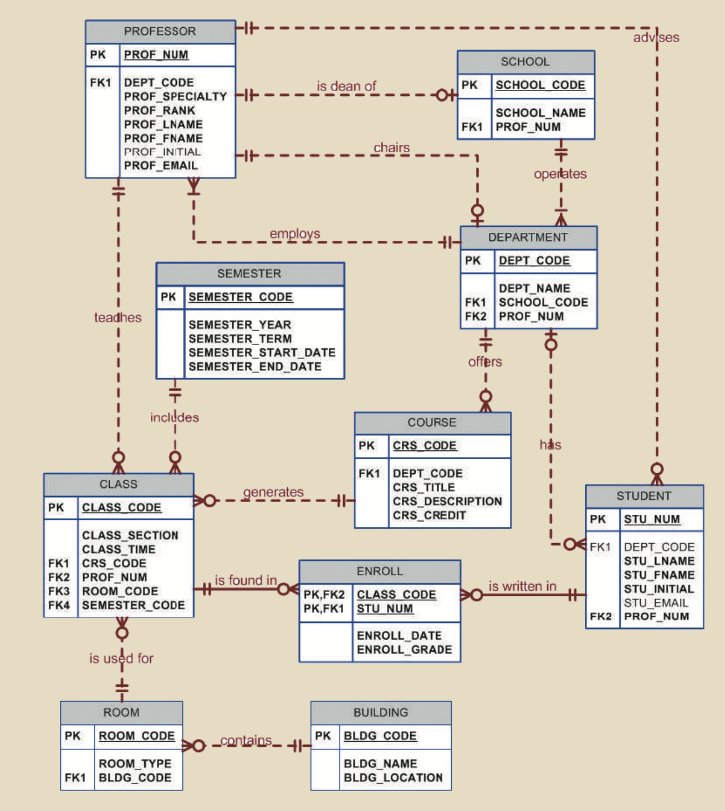

Entity Relationship Modeling
Entity Relationship Modeling¶
Note
ERM is a Conceptual Model and is therefore independent of Database type and can be used to model an organization’s data requirments. ER Models are used in logical design, but for the purposes of this class, the conceptural model will be directly related to ER Components.
Identify ER Components¶
- ERM forms basis of ERD (Conceptual End-User View)
- ERD comprises of: entities, attributes, and relationships and can take 3 forms:
- Chen notation: Favors conceptual modeling.
- Crow’s Foot notation: Favors implementation modeling.
- UML notation: Can be used for both conceptual or implementation modeling.
ERM Parts¶
Entities: Entity referes to Entity set and not individual occurances (i.e. in ERM think table not row)¶
- In all 3 notations it is a rectangle usually with an UPPERCASE noun NAME
Attributes: Characteristics of Entities¶
{kind=link}
- Chen’s notation: Ovals with UPPERCASE attribute name, connected via a line to entity rectangle
- UML and Crow’s Foot: In a separate box below the entity rectangle.
- Required Attributes: Values are required
- Name/Label are usually BOLD
- Optional Attributes: can be left empty.
- Name/Label are normal
- Domain Attributes: restricted range of values (GPA, gender, address, etc.)
- Identifier Attributes: These are synonymous with Primary keys
- Underlined in most notations.
- Composite Identifier: More than 1 attribute makes up the Primary Key
- Usually just multiple underlined attributes.
- Composite Attributes: An attribute that can be sub-divided (e.g. Address)
- Chen notation is attribute bubbles stemmed from main attribute bubble.
- UML and Crow’s Foot usually decompose these into individual simple attributes, but how that is done is left to the designer.
- Single Valued Attribute: Attributes with just a single value (Part No., SSN, etc.)
- Could still be a Composite Attribute
- Multivalued Attribute: Attributes that can have multiple values (Car: Top, Body, Trim Color, etc.)
- Derived Attributes: Attributes derived from other attributes (e.g. Age from DoB).
{kind=link}
{kind=link}
{kind=link}
{kind=link}
Define, Refine, and Incorporate Relationships Between Entities¶
- Active or Passiver VERB association between 2 or more entities (AKA participants).
Connectivity & Cardinality¶
- Relationships are always bi-directional connectivity, so when deciding on relationship classification ask yourself how the entities are connected going in both directions (e.g. Person -> Dept and Dept -> Person).
- Relationship connectivity can have minimum and maximum limits dubbed cardinality
- Cardinality is usually indicated in parenthesis like: (min, max), and are established by business rules.
- Cardinality is enforced either at the application level or by databadse triggers
{kind=link}
Existence and Independence¶
- An entity that can’t exist without a dependent entity is existence-dependent entity (e.g. Dependent and Employee)
- An entity that can exist on its own, even though relationships exist are existence independent entities (e.g. Parts and Vendor, since a part might not have a Vendor).
Relationship Strength¶
- Weak/Strong relationships are new to ERM and therefore not part of the conceptual Chen notation.
- A Weak or Non-Identifying relationship is one where the primary key of the related entity does NOT contain the primary key from the other related entity.
- A Strong or Identifying relationship is one where the primary key of the related entity IS in the primary key of the other related entity.
- The DB Designer must consider transactions, efficiency, and information requirements to decide the type of strength relationship to use.
{kind=link}
{kind=link}
Entity Strength¶
- Strong/Regular Entity simple need to satisfy existence independence
- A Weak Entity must be existence-dependent and have a Strong relationship
{kind=link}
Relationship Participation¶
- Optional Participation: A row on the :M optional side of the relationship doesn’t have to exist.
- Designated with an O indicating optional participation in a Crow’s Foot diagram.
- Cardinality minimum has to be 0
- Mandatory Participation: A row on the :M side MUST exist.
- Cardinality minimum has to be at least 1
Note
The relationship strength depends on how the PK of the related entity is formulated, while the relationship participation depends on how the business rule is written.
{kind=link}
Below is a great connectivity example showing how Class is optional to Professors (i.e. professors may do research only), while every Class has to have 1 and only 1 Professor.
{kind=link}
Relationship Degree¶
{kind=link}
Recursive Relationships¶
- Method 1: Unary, add an attribute column that matches PK of table (e.g. Employee has a Manager). This is a 1:1 relationship where each entry will only have a single manager.
- Method 2: Binary, add a table with a 1:M relactionship where the :M side gets the PK from the 1: side. This allows for 1:M recursive relationships (e.g. PARTS composed of PARTS)
Developing an ER Diagram¶
Iterative Process¶
- Create a detailed narrative of the organization’s description of operations.
- Identify the business rules based on the description of operations.
- Identify the main entities and relationships from the business rules.
- Develop the initial ERD.
- Identify the attributes and primary keys that adequately describe the entities.
- Revise and review the ERD. 
{kind=link}
DB Design Tradeoffs, Reconciling Conflicting Goals¶
The 3 things always to consider¶
- Design standards: Normalization, reduce nulls
- Processing speed: performance, security, shared access, and data integrity
- Information requirements